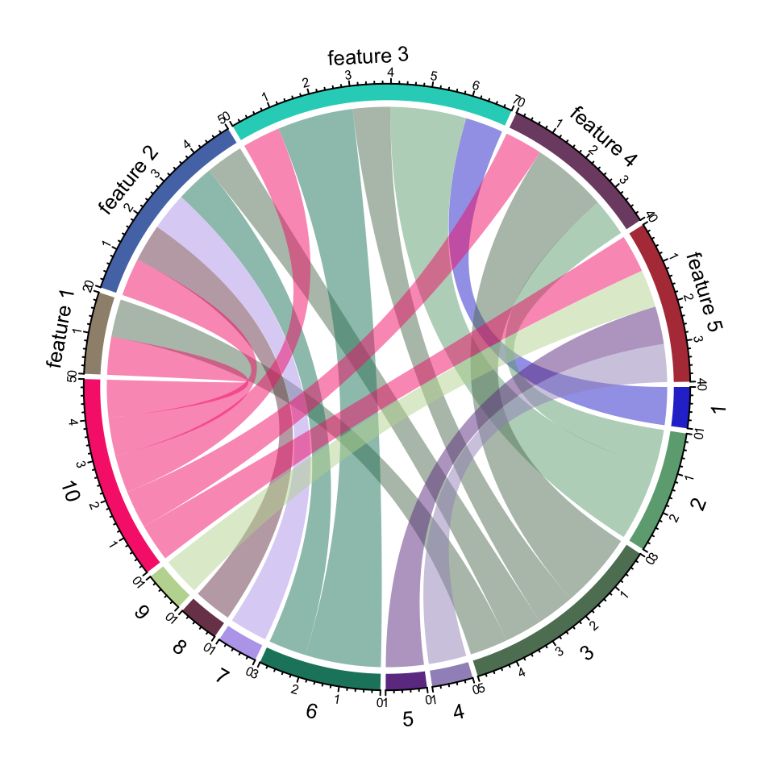

I have just updated this website with an academic theme and it looks amazing! I’m glad I’ve tried it. Now I not only have a solid functionality behind the website but also quite a pretty website’s face. I am convinced that Hugo is great and very fast for building websites. Please do not hesitate to try it out!
Introduction Thousands of times I’ve heard of the Gene Set Enrichment Analysis or GSEA. Thousands of times I tried to run it and thousands of times I failed! As lucky as it can get my recent collaborative work required me to run GSEA. I thought this time I will finally figure out how to do it. As usual it didn’t work out well… First of all, there are millions of R tools which can run GSEA analysis.
I haven’t written anything to this blog during 2016. So one of my New Year’s resolutions will be to start recording my work updates and personal thoughts here. I have also updated this blog to blogdown, so now I will be able to easily share my R wisdom with you. Here is what I will be able to plot and deploy in the blink of an eye!

I’ve just come across a great blog post about the best way of starting data analysis in R. I agree with all tips mentioned there, especially regarding RStudio. If you are just starting with R, please have a look and follow the tips - it will save you enormous amount of time!
I am attending the Functional Genomics & Systems Biology: From Model Organisms to Human Health. Here is my poster on SC3 clustering tool for single-cell RNA-Seq data: http://f1000research.com/posters/4-1182 In total our group is presenting 5 posters! Here they are: @wikiselev with poster at #FGSB15 pic.twitter.com/KhxnOGGlUW — Martin Hemberg (@m_hemberg) October 29, 2015 Poster selfie at #FGSB15 pic.twitter.com/UYCwHJJwZB — Martin Hemberg (@m_hemberg) October 29, 2015 Tallulah with poster at #FGSB15 pic.
I have just learnt about some tension growing around Theranos biotech startup. Looks like their advertisement strategy worked very well, giving them more than 400 million dollars of investments. However, now the whole technology is under a big question. The topic is familiar to me because last year I took part in the Biotechnology YES competition and my team presented a similar idea of diagnosing cancer relapse from a blood test.
Today I presented the SC3 tool that I am developing for clustering of single-cell RNA-Seq data. I think the audience liked my presentation, I received several very positive feedbacks and very interesting questions. One of the positive replies was from the edgeR developer Davis McCarthy. Now I feel honoured :-) Here are my slides if you are interested in single-cell research:
Enjoy!
My paper “Perturbations of PIP3 signalling trigger a global remodelling of mRNA landscape and reveal a transcriptional feedback loop” has been published in Nucleic Acids Research journal! Here is a link to it. It has been long 4 years since I started that project and I am very happy that finally it is published! Special thanks to Veronique Juvin who performed all experiments for the paper and also thanks to all co-authors for their help, supervision and support!
I was using ISMARA for my last paper which is now in press in NAR journal. ISMARA is a very nice tools that allows one to obtain transcription factor activities from only RNA-Seq or Chip-Seq data. ISMARA analysis is a significant part of my paper and one of the main findings was revealed from the ISMARA analysis. The main bottleneck of this tool was that one had to upload their bam files using a browser and this could take a lot of time and could stop in the middle of the uploading.
Today I received one of the best recent Bioinformatics books - Bioinformatics Algorithms by Phillip Compeau & Pavel Pevzner! Whether you are a specialist or a beginner this is a must read for you. The first time I found this course was in 2013 when I needed and wanted to learn the basics of Bioinformatics. It was a simple Coursera course that was just launched. In only a couple of years it has become a comprehensive course with several specializations.